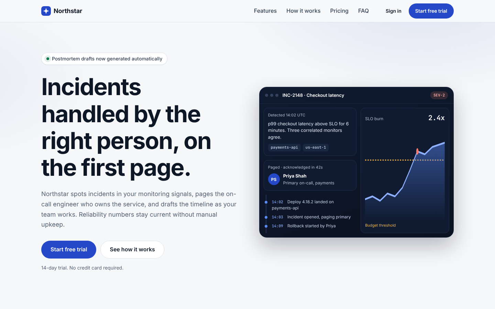
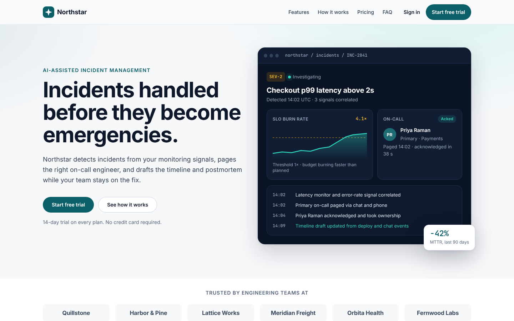
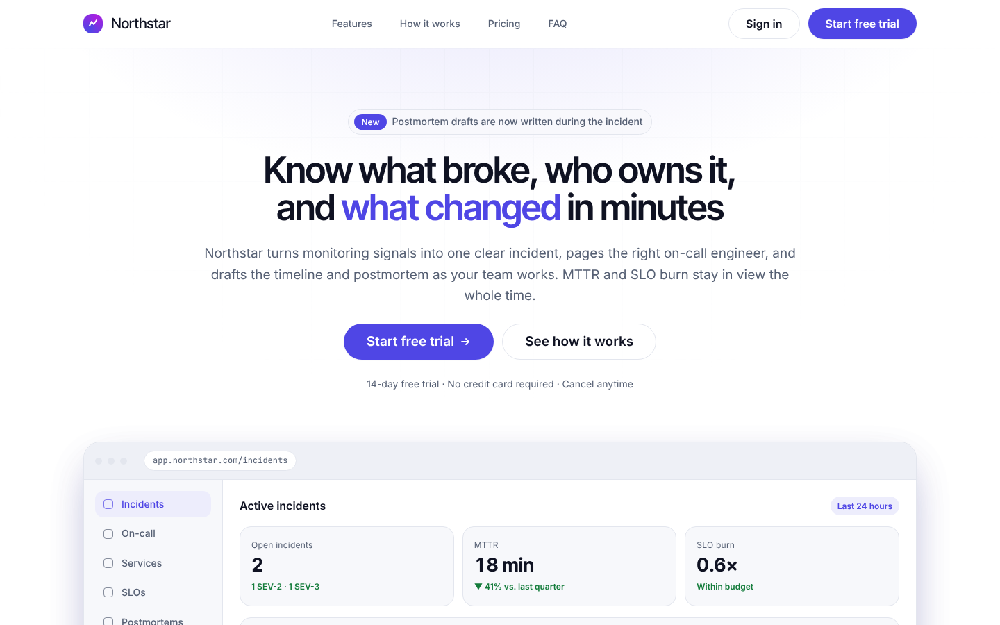
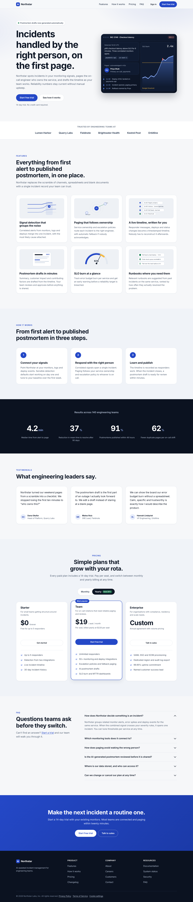
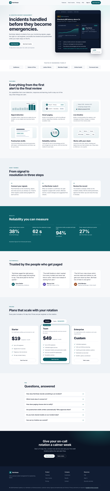
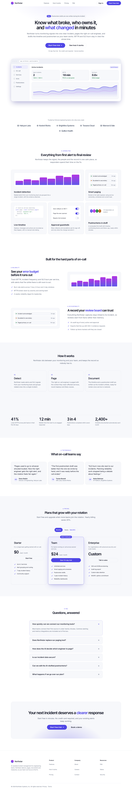

Same model, with and without OpenUI Engine
Headline. Arm B had the engine available but made zero MCP calls, so it is effectively a second baseline. Arm B2 (engine required) was run afterwards with a changed protocol. In the blind design review the engine-built page ranked last. This experiment does not show that OpenUI Engine improves a cheap model's design.
Read first. The requested model (GPT-6 Luna) is not available in this environment. Both agents are claude-haiku-5-5 (substitute for GPT-6 Luna, which is unavailable), the cheapest model available — a substitute. One run per arm (n=1), the audit tooling is the engine's own, and design judgements are subjective. See the full report for confounds. Not a proof.
Live sites
Measured (identical measurement applied to both)
| Metric | A — Baseline | B — Engine available, not used | B2 — Engine required |
|---|---|---|---|
| Audit gate (errors / warnings) | 3 / 15 | 4 / 9 | 0 / 0 |
| Interactions passed (desktop) | 2/3 | 2/3 | 7/7 |
| axe + a11y errors | 0 | 0 | 0 |
| Horizontal overflow errors | 0 | 0 | 0 |
| Console / network errors | 0 | 1 | 0 |
| Distinct font sizes | 17 | 14 | 9 |
| Distinct colours (text+fills) | 29 | 30 | 12 |
| Distinct corner radii | 7 | 7 | 8 |
| Spacing on 4px grid | 87% | 91% | 91% |
| Source size (KB) / lines | 53 / 1618 | 57 / 1900 | 56 / 550 |
| Engine heuristic score (engine's own tooling — biased toward its markup) | 86 | 85 | 95 |
| Markup-agnostic behaviour checks passed (pricing, FAQ, mobile menu) | 3/3 | 3/3 | 3/3 |
| MCP tool calls made by the agent | 0 | 0 | 11 |
| Blind judge rank (1 = best, Sonnet, static screenshots) | 2 | 1 | 3 |
| Tokens in session (agent) | 105031 | 109669 | 140858 |
| Tool calls (agent) | 15 | 28 | 51 |
| Wall-clock (agent, s) | 184 | 229 | 377 |
Screenshots — desktop 1440px (above the fold)



Screenshots — mobile 390px (full page)
Screenshots — desktop full page


